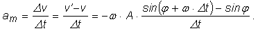
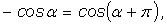

Legea mişcării oscilatorii armonice:
Legea mişcării oscilatorii armonice:
| (1) |
A.6. |
Mişcarea oscilatorie armonică |
Oscilaţiile armonice sunt cheia înţelegerii tuturor oscilaţiilor. Francezul Jean Fourier a demonstrat, în 1810, că oricare oscilaţie (amortizată sau nu, periodică sau nu) poate fi descrisă ca o suprapunere de oscilaţii armonice de diferite frecvenţe şi amplitudini.
Poţi descrie complet o oscilaţie armonică prezentând cum se modifică elongaţia în timp. Aceasta este dată de:
Legea mişcării oscilatorii armonice:
| (1) |
Reprezentarea grafică a legii mişcării oscilatorii armonice este prezentată în figura 1A6−1.
Fig. 1A6−1. Reprezentarea grafică a legii mişcării oscilatorii armonice.
 Lansează această reprezentare animată a elongaţiei unui oscilator armonic!
Lansează această reprezentare animată a elongaţiei unui oscilator armonic!
Folosind expresia (1), sau graficul din figura 1A6−1, poţi afla elongaţia oscilatorului armonic la oricare moment de timp. Poţi folosi, după dorinţă, oricare funcţie armonică (sinsus sau cosinus), deoarece

 Provocarea 1A6−1
Provocarea 1A6−1
Poţi afla oare şi cât de repede se mişcă oscilatorul armonic la oricare moment de timp?
Pentru simplitate, să notăm în continuare φ faza la momentul t:

Dacă la momentul t elongaţia oscilatorului este
la un moment ulterior t + Δt, elongaţia este:

Viteza medie a oscilatorului între aceste două momente de timp este:
Dar
Cu cât intervalul de timp Δt este mai mic, cu atât viteza medie vm se apropie mai mult de viteza la momentul t. Totodată, cu atât mai bune sunt aproximaţiile:
şi
Poţi verifica aceste aproximaţii calculând valorile funcţiilor cosinus şi sinus pentru valori din ce în ce mai mici ale argumentului
(exprimat în radiani). Câteva astfel de valori sunt prezentate în tabelul 1A6−1.
Tabelul 1A6−1. Valori ale funcţiilor cosinus şi sinus (rotunjite la primele şase zecimale), pentru valori din ce
în ce mai mici ale argumentului.
| a (rad) |
cos a | sin a |
| 1 | 0,540302 | 0,841471 |
| 0,1 | 0,995004 | 0,099833 |
| 0,01 | 0,999950 | 0,010000 |
| 0,001 | 1,000000 | 0,001000 |
| 0,0001 | 1,000000 | 0,000100 |
Cu aceste aproximaţii, viteza oscilatorului la momentul t devine:
Efectuând calculele, obţii:
Folosind relaţia
obţii că viteza instantanee a oscilatorului la momentul t este dată de:
Legea vitezei oscilatorului armonic:
| (2) |
Aşadar, viteza oscilatorului armonic se modifcă armonic în timp, însă are o altă fază decât elongaţia oscialtorului:
 înaintea elongaţiei acestuia. (figura 1A6−2)
înaintea elongaţiei acestuia. (figura 1A6−2)
Fig. 1A6−2. Reprezentarea grafică a vitezei şi elongaţiei oscilatorului armonic.
Lansează această reprezentare animată a elongaţiei şi vitezei unui oscilator armonic!
Folosind expresiile (2) sau graficul din figura 1A6−2, poţi afla viteza oscilatorului armonic la oricare moment de timp.
Provocarea 1A6−2
Poţi afla oare şi cât este acceleraţia oscilatorului armonic la oricare moment de timp?
Pentru simplitate, vom nota în continuare φ faza la momentul t:
Dacă la momentul t viteza oscilatorului este
la un moment ulterior t + Δt, viteza oscilatorului este:
Acceleraţia medie a oscilatorului în acest interval de timp este:

Dar
Cu cât intervalul de timp Δt este mai mic, cu atât acceleraţia medie se apropie mai mult de acceleraţia la momentul t. Totodată, cu atât mai bune sunt aproximaţiile:
şi
Cu aceste aproximaţii, acceleraţia oscilatorului la momentul t devine:

Efectuând calculele, obţii:
Folosind relaţia

obţii că acceleraţia oscilatorului armonic este dată de
Legea acceleraţiei oscilatorului armonic:
| (3) |
Aşadar, acceleraţia oscilatorului armonic se modifică armonic în timp, dar are altă fază decât elongaţia.
Fig. 1A6−3. Reprezentarea grafică a acceleraţiei şi elongaţiei oscilatorului armonic.
Lansează această reprezentare animată a elongaţiei şi acceleraţiei unui oscilator armonic!
Folosind expresiile (3) sau graficul din figura 1A6−3, poţi afla acceleraţia oscilatorului armonic la oricare moment de timp.
Setul de legi ale mişcării oscilatorii armonice, dat de expresiile (1), (2) şi (3), îţi permit să analizezi complet mişcarea oricărui oscilator armonic, din punct de vedere cinematic.
Provocarea 1A6−3
Poţi face oare şi o analiză dinamică a oscilatorului armonic?
Dacă într−o analiză cinematică eşti interesat de poziţii, viteze şi acceleraţii, într−o analiză dinamică eşti interesat îndeosebi de forţe şi mase.
În prima formă a acceleraţiei din expresiile (3), cantitatea este, conform relaţiei (1), chiar elongaţia x.
Aşadar, relaţia dintre acceleraţia şi elongaţia unui oscilator armonic este:
Dacă înmulţeşti ambii membrii ai relaţiei precedente cu masa m a oscilatorului, obţii:

Conform principiului fundamental al dinamicii, cantitatea m · a este egală cu mărimea forţei care acţionează asupra oscilatorului armonic. Această forţă este de tip elastic, proporţională cu elongaţia şi orientată mereu spre poziţia de echilibru:

constanta de proporţionalitate k fiind constanta de tip elastic a oscilatorului.
Aşadar,
 |
(4) |
Relaţia precedentă îţi permite să determini pulsaţia unui oscilator armonic (şi, de aici, perioada şi frecvenţa acestuia), dacă îţi sunt cunoscute constanta de tip elastic şi masa oscilatorului.
Provocarea 1A6−4
Cât te aştepţi să fie perioada de oscilaţie a unui oscilator armonic având masa 1 kg, sub acţiunea unei forţe de tip elastic a cărei constană este 1 N/m?
Dar dacă masa oscilatorului se dublează, constanta de tip elastic rămânând aceeaşi?